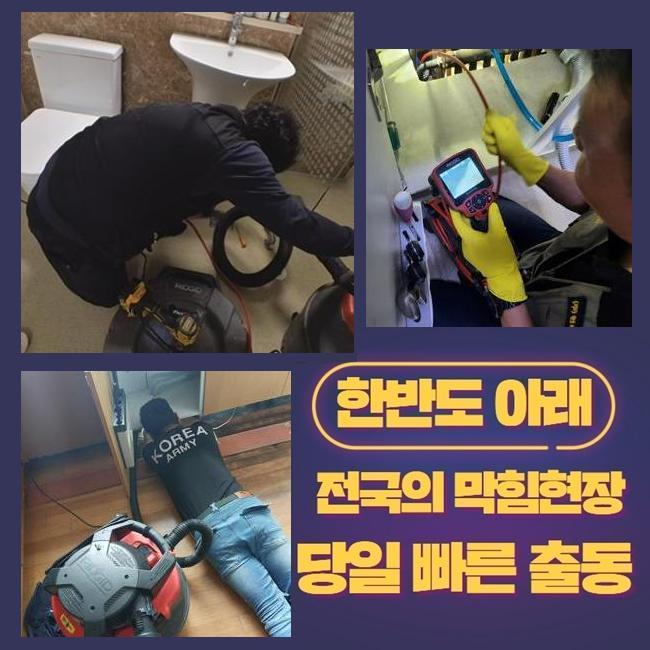
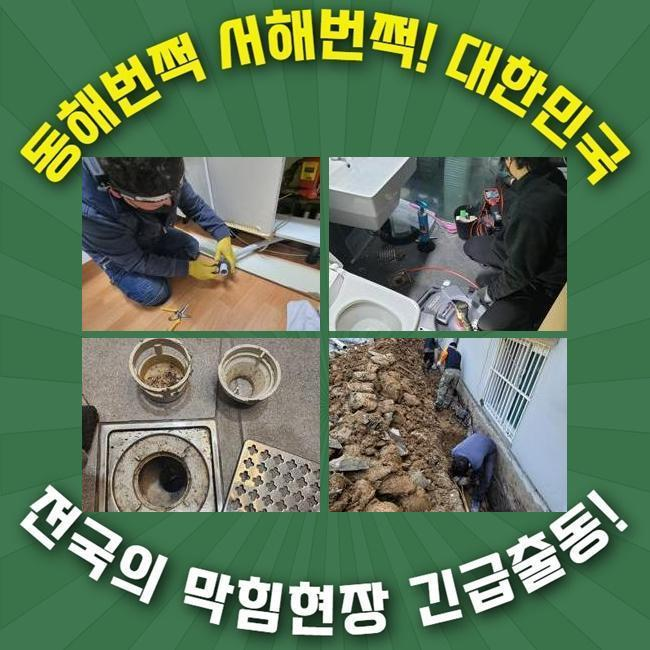
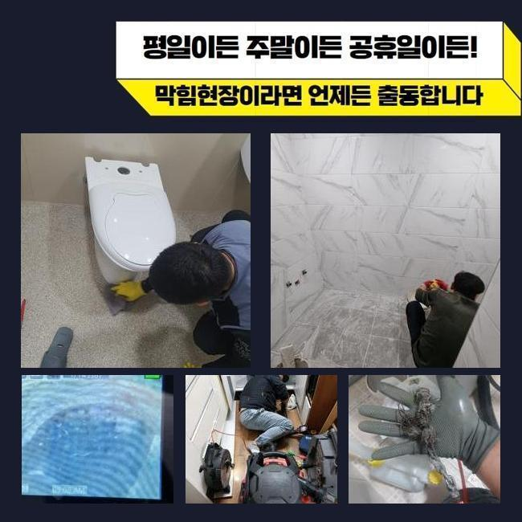
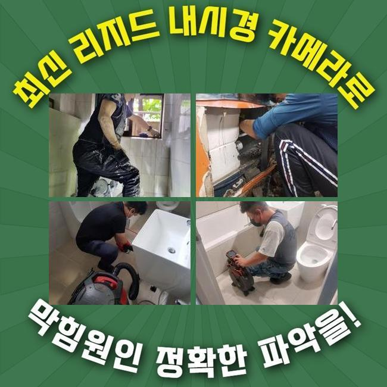
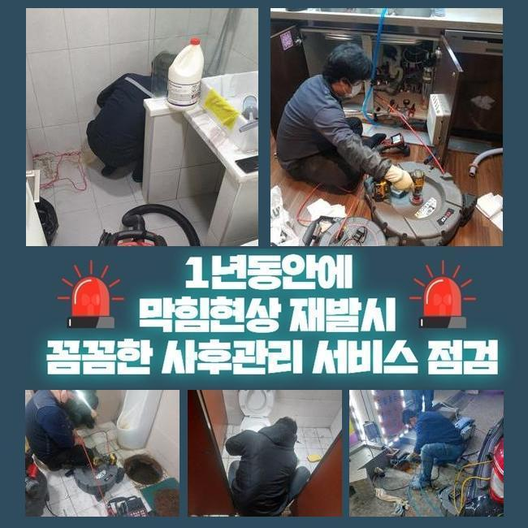
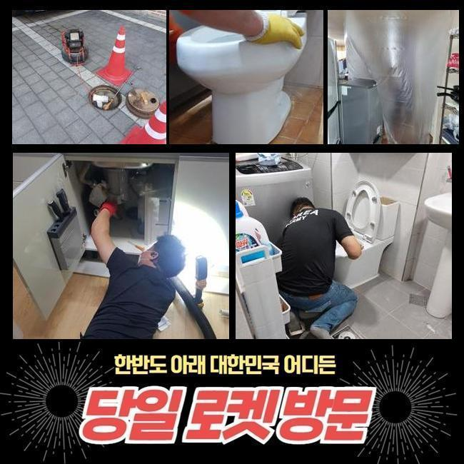
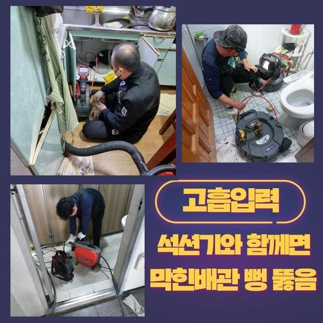

🏠 금천구 싱크대역류 영등포구 배관청소
용인 싱크대막힘 전문 시공 후기

📋 작업 개요
- 위치: 용인
- 서비스 유형: 싱크대막힘, 배관막힘, 맨홀막힘, 역류해결, 배관청소, 고압세척
- 작업 일시: 2024. 12. 11. 0:57
- 업체명: 하수구수사대 (010-5615-2118)
🔍 문제 상황
금천구 싱크대역류 영등포구 배관청소
주거하는 시설과 일반음식점과 같이 업장들에서 배수가 안되어 불편을 토로하는 사례들이 종종 나타나게됩니다
상황의 양상들을 미뤄보았을 때 운영의 불편과 더불어 피해들을 입으셨다면 조속한 조치가 요구됩니다
우선은 추후에 재발하는 문제가 안나타나게끔 제대로 된 수리들이 이행되는 전문진의 선별과정들은 중요하죠
먼저 상업 설비단지에 위치하고 있는 식품관련 생산지였는데요
해당 지점의 관로들이 역류하면서 육안으로도 심각하다고 생각하여 조속한 해결이 필요했습니다
보건적인 위생요소가 갖춰져있어야 할 식료품 작업장인 만큼 생산 시점의 업무상 중지와 손실이 나타나게 되었는데요
시정을 원만하게 진행시키고자 두루두루 증상들을 꼼꼼히 관찰했어요
며칠 전 여타 전문진이 내방하였으나 하수관을 찾질 못하여 시정에 난항을 겪었다고 해요

🔎 원인 분석
💡 전문가 진단: 정밀 진단 장비를 사용하여 슬러지의 고착 여부를 판명하고 타격/세척 작업을 실시했습니다.
도면까지 정확치 못했으나 우선적으로 중앙집수 라인의 스팟들을 찾기위하여 청소를 속행했죠
탐지장비로 써서 위치를 명확히 특정시켜보고자 했습니다
내시경 카메라를 이용해주어 내측을 요목조목 살펴 연유를 확인했습니다
대체적으로 통수오류가 생기는 시점에는 식자재나 기름기들 여러가지 잔해가 쌓이는 경우들이 관찰되죠
이 현장도 마찬가지로 예측대로 굳은 뒤 쌓여버린 이물이 확인됐죠
평상시에 전문가들은 스프링을 이용하거나 석션장치로 알려진 장비를 사용한답니다
초반쪽에 통수만 확보하는게 가능하기에 고착물은 제거가 안되요
그렇기에 고착물과 강도높은 슬러지들을 안전하게 청소시키는 강력한 수압을 뽐내는 고압노즐분사 방식의 이용으로 작업해줍니다
금일의 현장처럼 작업범위들이 광활한 장소라면 피해범위도 일반적으로 큰 것이 사실입니다 이 경우에서는 스케일링 기기로 문제를 잠재우는게 불가하므로 고압노즐 분사를 진행해주는 사례가 많아요
그 다음으로는 차와 연결된 고압 세척기를 꺼내서 각 라인에 흡착된 기름성분들을 탈락시켜 깨끗히 제거했어요

🔧 작업 과정
고압을 통한 방법으로 잔해물을 없애고 심층부까지 작업했습니다
청소가 끝나면 세척한 구간들을 내시경 촬영을 꺼내서 확인해주었습니다
의뢰인분께도 현재의 배수관의 상태들을 직관적으로 보여줄 목적으로 검산과정들은 함께 수행하는것을 초고로하여 진행합니다
그 다음 내방한 곳은 상가건물 맨홀쪽에서 솟구치는 증상이 목격되었어요
오수맨홀의 경우 비중자체가 크기에 안정적인 처리가 필요했는데요
맨홀쪽부터 길가의 매립관들도 두루두루 내시경기계를 통하여 진단해봤습니다
체크하니 단시간이라기 보다 꾸준히 쌓이게 된 슬러지들이 한 웅큼인 상황의 심각성을 파악해봤어요
검수과정이 끝나곤 적절한 장치로 청소를 시작하였습니다
고수압방식으로 내부에 침전된 상당량의 기름때를 없애주었습니다
수습을 하고서는 내시경카메라를 꺼내어 타겟 부분을 향한 제거되어진 부분들을 체크할 수 있었죠
갑자기 발발할 지 모르기에 문제들로 곤란하셨을 고객분을 위해 원하는 시간대에 방문 및 시정을 제공해 드린답니다
상업시설과 같이 이동이 많아 물빠짐 사고들이 생기는 시점에는, 불편이 한두가지가 아닙니다
해당 곳에서도 내시경카메라로 검수를 해보고 흡착물 청소를 위하여 샤프트기를 이용했어요
2번째 장소에서도 최종적으로 청결하게 고압 세척을 속행했죠
모든 청소 과정에서 먼저 핵심은 내시경 카메라를 이용해주어 증세의 기조가되는 구간들을 조속히 찾는것입니다
내시경기기를 이용하지 않을 시 증상의 시작인점이 어느 지점에 있는지 인지하는것에 무리가 따르기에 업체를 고를때 내시경 사용유무를 필수적으로 물어보시길 바랍니다


✅ 작업 완료
배수장애가 발견되었다면 슬러지들과 오염된 것들을 청소하는건 하수관 전문인의 수습이 요구되고 셀프의 방식도 좋겠으나 의도치않게 문제의 경중이 악화되기에 필수로 전문업체를 호출하는게 시간으로보아도 합리적일 수 있어요
장소 불문 요청주시는 곳에서 작업을 거치고 추후관리 1년까지 보장하여 큰 걱정은 없으십니다
이물이 제거되었는지 내시경기기를 보여드려 올바른 과정들을 실시함을 보장합니다
의문이 있으실 경우 아무때나 질문하시면 응당 말씀드릴게요




⚠️ 주방 싱크대 배관 막힘 예방 수칙
- ✅ 기름기가 묻은 식기나 프라이팬은 설거지 전 키친타올로 반드시 기름때를 닦아내세요.
- ✅ 주기적으로 싱크대 개수대에 뜨거운 물을 가득 받아 한 번에 내려 배관 내부 기름을 씻어내세요.
- ✅ 배수구 거름망을 미세한 필터로 사용하시고 음식물 찌꺼기가 틈으로 새어 들지 않게 관리하세요.
- ✅ 베이킹소다와 식초를 뜨거운 물과 함께 일주일에 한 번씩 부어주면 배관 살균과 막힘 예방에 좋습니다.
💡 핵심 정리
- 확실한 장비 작업(내시경 점검 및 샤프트 스케일링)으로 원인을 뿌리 뽑습니다.
- 작업 후 1년 이내에 동일한 부위 재발 시 100% 무상 A/S 서비스를 보장합니다.
- 서울 · 경기 · 인천 전 지역에 24시간 언제든 긴급 출동할 수 있도록 항시 대기 중입니다.
❓ 자주 묻는 질문 (FAQ)
🚨 용인 싱크대막힘 문제로 고민이신가요?
정확한 원인 진단과 확실한 시공으로 재발 없는 해결을 약속드립니다.
24시간 긴급 출동 | 서울 · 경기 · 인천 전지역 | 1년 내 재발 시 무상 A/S